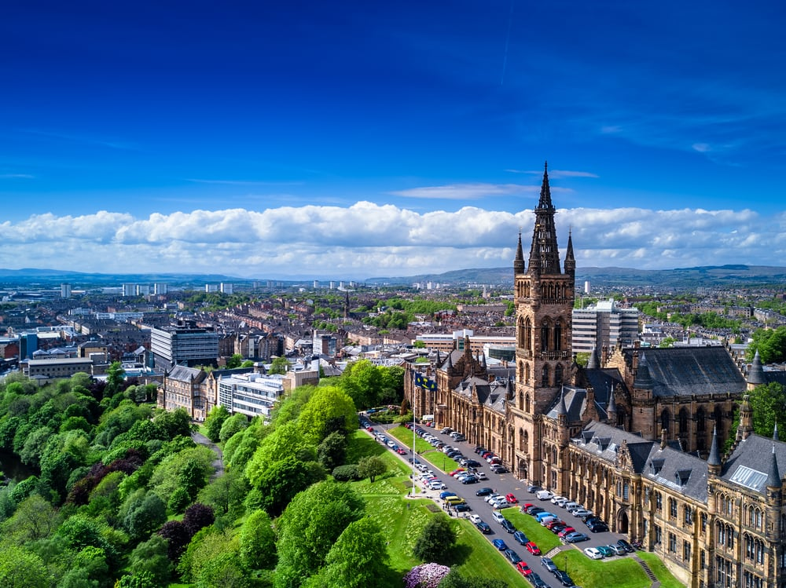

Barcelona, a captivating city with undeniable charm, is a true landmark in Spain. Along with its vibrant culture and delicious food,
the city is also home to one of the best football clubs in the world, with millions of fans across the world dreaming to visit its
world-renowned stadium, the Camp Nou, at least once in their lifetime.
Experience Fukuoka!
Fukuoka offers a blend of tradition and modernity that captivates visitors.
Whether you stroll through the historic streets of Nakasu or enjoy the city's vibrant nightlife, Fukuoka's unique cultural fusion
is an unforgettable experience that adds to the city's charm.
Discover Glasgow!

Glasgow, Scotland's largest city, is also a hotspot of cultural activies, from its successful football teams such as Celtics and Queens
Park Rangers to modern art museums such as the Gallery of Modern Art (GoMA).